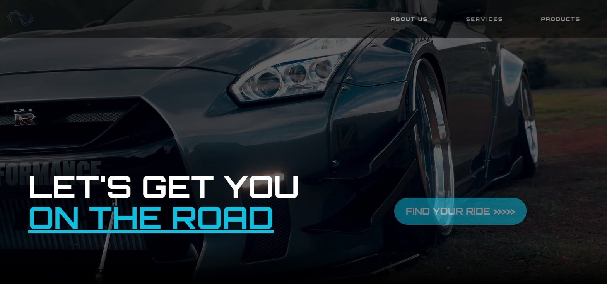
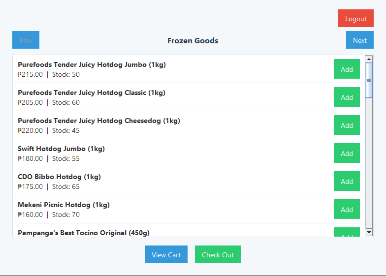
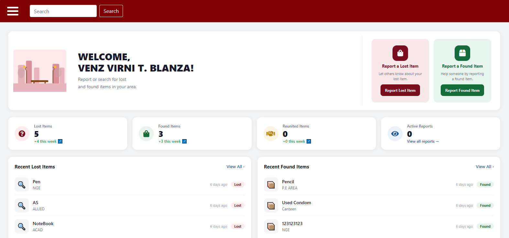
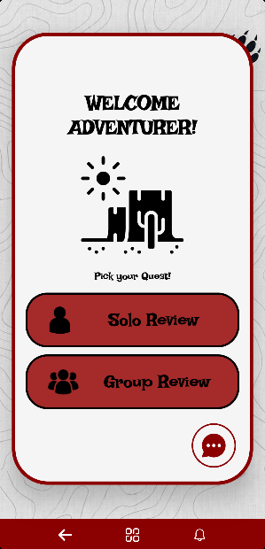
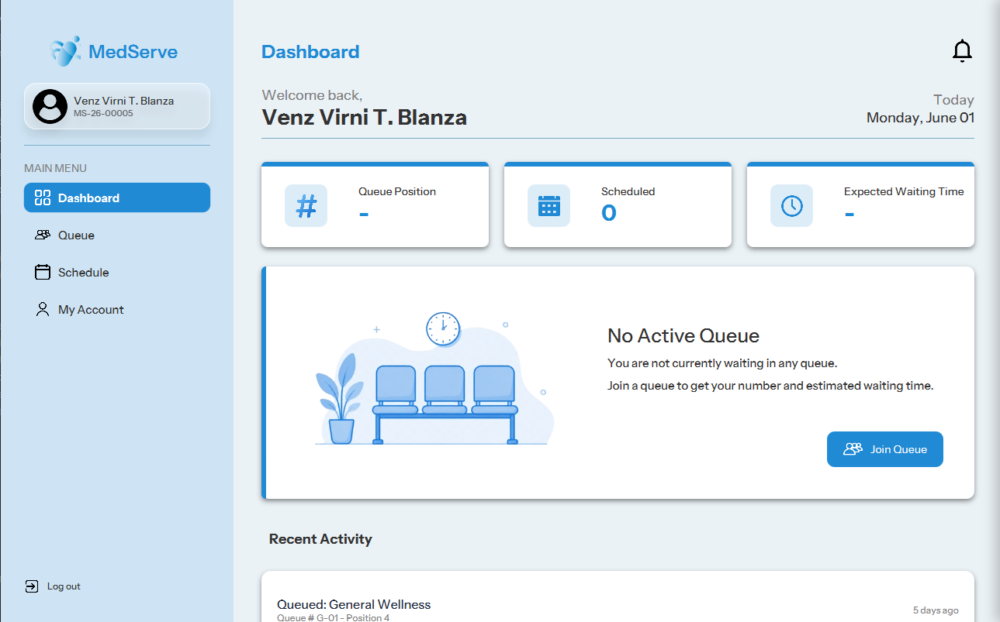
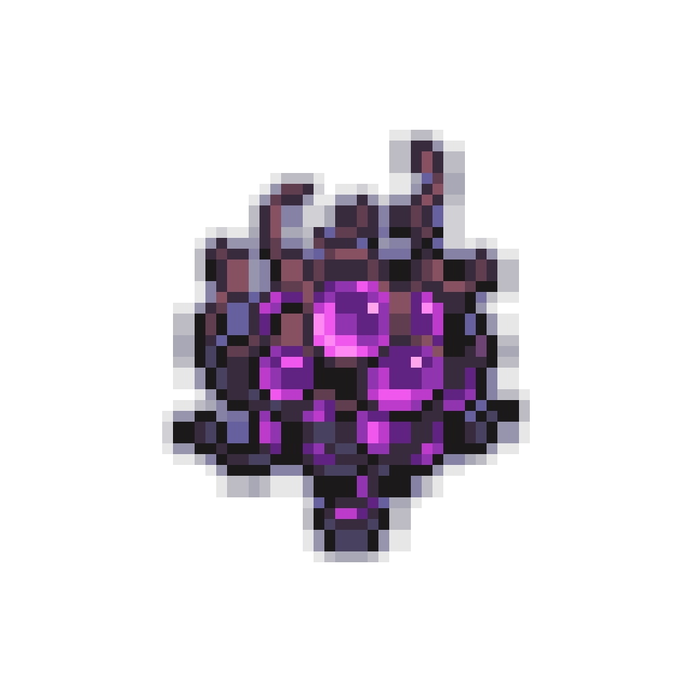

Venz Virni T. Blanza
Aspiring Data Analyst and Machine Learning Engineer
BACKGROUND
Hello World! I'm Venz. I aspire to expand my knowledge and skills in full-stack development, but my ultimate goal is to become a machine learning engineer and data scientist. Some of you may already know me at Cebu Institute of Technology - University. My strongest technical foundation is in Java, which serves as my primary language for building out robust, database-linked applications like shopping mart systems, and public health center's queueing system. While I enjoy building functional full-stack software, my ultimate passion lies in exploring data and my eyes are firmly set on the future of AI. I am deeply interested in machine learning and data science, and I'm focused on using my solid programming foundation to bridge the gap into those fields.
TECH STACK
While Java is my primary language for building practical applications, my technical toolkit is designed for full-stack versatility. I have solid intermediate experience with systems programming (C, C++, Assembly), data management (Python, MySQL), modern web development (HTML, CSS, JavaScript, Node.js, Express) and mobile development (Kotlin, Room).


FEATURED PROJECTS

01
Infinilux
My first web development project, built in collaboration with Juner John Caimor. Designed to showcase vehicles, this application focuses entirely on front-end fundamentals using HTML, CSS, and JavaScript to explore interface design before diving into databases.

02
Veritas Shopping System
A comprehensive shopping mart system that served as my first major Java project and initial introduction to backend databases. Developed alongside my capstone group, Veritas, it utilizes Java Swing to construct the graphical user interface.

03
WildFind
A web-based application collaboratively developed with Juner John Caimor. It utilizes standard front-end technologies connected to a PHP and MySQL backend, serving as a stepping stone before my transition into modern Node.js and Express environments.

04
WildQuest
An interactive Android quiz platform designed to encourage competitive learning. This mobile application was developed natively, using Kotlin for the front-end interface and Room for local database management and storage.

05
MedServe
A public health center queueing system built alongside my groupmates in Queue<T>. This project represents a modernization of my desktop application skills, utilizing JavaFX to build a cleaner, more responsive user interface compared to earlier Swing-based projects.
Side Quests

Besides Machine Learning, and Full Stack, I am planning to take on Game Development as a side track. In fact the game I am trying to make is the exact copy of the game that might shut down anytime soon. I am not planning it to be monetized nor be publicized, I just want it to be my home whenever I feel lost. It's my comfort place where the memories of the past resides, the memories of the old comrades I used to play with.
Besides making projects, I am also playing games like any other teen adults out there, the games I play are Mobile Legends, and Guardian Tales where the inspired character for the design of the website came from (and the planned game I am trying to do). I have also played Rythm Games like Project Sekai both english version and japanese version, BangDream, LoveLive, and D4DJ.
When I am completely stepping away from compilers and text editors, I dive heavily into anime and literary lore, particularly stories involving Isekai, reincarnation, and time-travel. Musically, I am deeply captivated by game soundtracks and emotional ballads, and I even spend time breaking down and translating C-pop lyrics and themes from games like Genshin Impact (The Ten Hilichurls which is parodied from 十只兔子 - The Ten Rabbits and basically other songs that were made by the Genshin Impact Chinese fanbase).
Beyond gaming tracks, my music palette is completely borderless and genre-fluid. I will listen to almost anything that hits the right vibe—shifting easily from heavy loops of Rap, Phonk, Rock, and Metal to the electronic harmonies of Vocaloids and melancholic melodies. My playlists are a global map, constantly cycling through J-Pop, K-Pop, P-Pop, OPM, and C-Pop, alongside Southeast Asian sounds ranging from Thailand's BNK48 and Vietnam's music scene to Indonesian favorites like Hololive and JKT48.